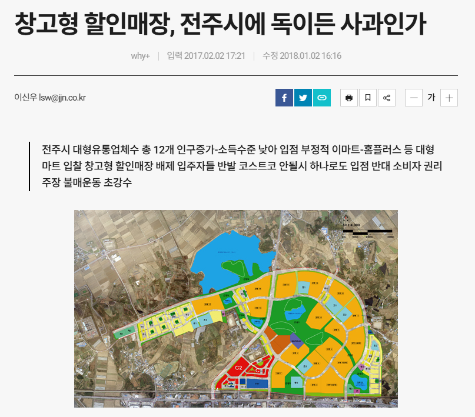
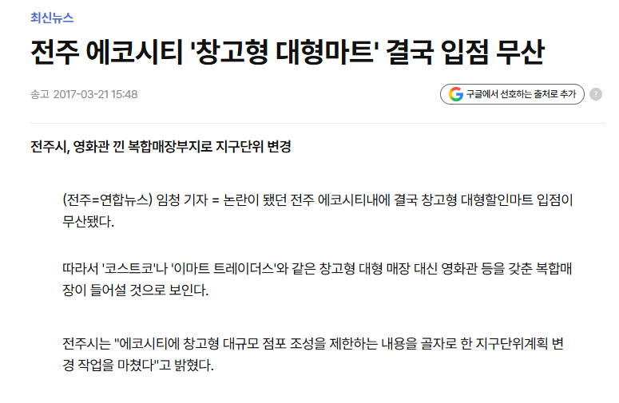
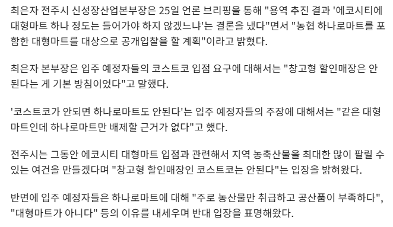
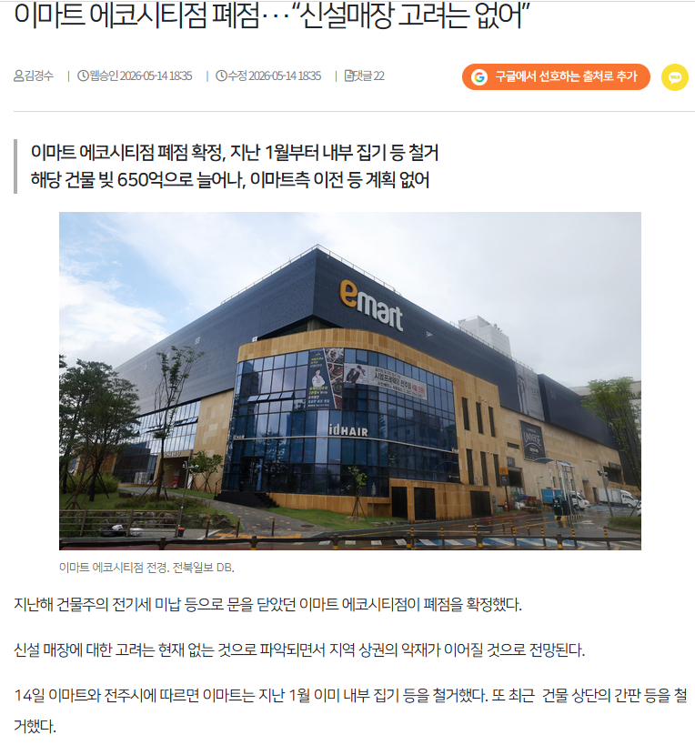
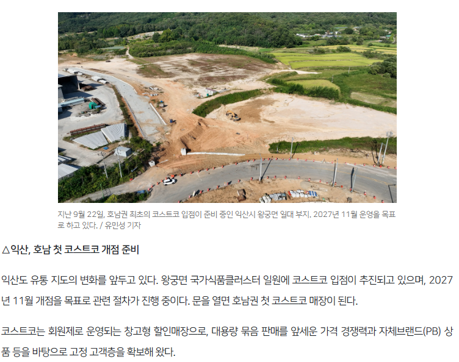

선 3줄 요약
1. 코스트코 - 호남 거점으로 전주 에코시티에 먼저 입점 요청
2. 시민단체와 지자체의 거부.
거부 이유: 시민단체의 주장 - 우리 아이들이 외국 냉동식품에 입맛이 길러져선 안된다와 소상공인 위협이 그 근거(이때 2016년 이었다)
3. 이후 진행 상황 코스트코 입점 실패 이후 이마트 트레이더스가 진출하고자 했으나, 또 거절되었다가 지자체에선 농협을 밀었고 에코시티 시민들이 반발하자 이마트로 입점 확정되고, 운영 시작되었으나 건물주가 전기세 미납하면서 무기한 휴점 이후 폐점 엔딩 맞음.
때는 근 10년 전 전주는 에코시티 개발이 본격화되기 시작하면서 이때 코스트코가 호남 거점으로 해당 지역을 지정하고 선제적으로 우리 진출하고 싶다며 전주시에 의향서를 제출함.

구체적으로 어느 곳에 입점하겠다고 밝히자 시민단체와 지자체가 합심해서 이를 틀어막기 시작했고, 이에 대한 대안으로 이마트가 트레이더스를 입점하고 싶다고 타진 했으나

또 다시 지자체와 시민단체가 틀어막으며 무산 되버렸고, 이후 시도한 게 하나로마트 입점 이었지만, 이번엔 당연히 시민들이 강력하게 반대하며 재차 무산되자 코스트코만 제외하고, 공개 입찰을 하자고 추진함(주민 의사는 당연히 없었... 그리고 공개 입찰도 창고형은 절대 안 된다는 게 시의 공식 입장)

해당 입찰에서 결국 이마트가 승리하며, 이마트가 2021년에 입점 성공했지만 5년만에

건물주 전기세 미납으로 에코시티점이 폐업해버리며 에코시티 쪽 주민들은 아무것도 남은 게 없어짐.
그리고 입점 실패한 코스트코의 호남 진출은 완주와 익산 중 고민하던 차에 완주는 또 다시 시민단체의 난립이 발생하자 익산은 이걸 보고 지자체와 시민들이 시민단체 머리 다 깨부수고 무시하고, 입점 찬성을 원하는 시민들이 스스로 시민단체를 조직하여 입점을 추진하는 등 많은 노력을 들여 입점 확정 및 올해 6월 건축 허가까지 남에 따라 착공 들어갔고, 내년 11월이 개점 목표로 확정됨.

출처
에코시티 폐점 - https://www.jjan.kr/article/20260514500515
공개 입찰 - https://www.news1.kr/local/jeonbuk/2896080
대형마트 입점 무산 - https://www.yna.co.kr/view/AKR20170321136500055
창고형 할인매장 전주 무산 - https://www.jjn.co.kr/news/articleView.html?idxno=706970
코스트코 착공 관련 기사 - https://www.jjan.kr/article/20261003500013
해당 원본 기사에 들어가보면 정치 관련이 아예 없는 것으로 가져왔고, 추가로 ㅇㄱㄸ가 있다면 말해주셈 없는 걸로 변경하겠음.
글 주변이 없으니 글 쓰기가 힘드네
재미 없으면 그냥 읽판으로 옮겨야지
시민단체 이런애들은 지역발전에 관심없어 걍 지들 이권만 중요하지
근데 지금은 중세도 아니고 다 도망갈수있다는걸 모르지 ㅋㅋ